Get ready for a long read on this one (it will be worth it though).
So, before proceeding with bicubic interpolation, we will examine the 1D case first. In the case of of nearest neighbour or bilinear interpolation, we get a piecewise function that is continuous over small intervals. For nearest neighbour, we get constant, flat “spikes”. With bilinear interpolation, we get sections that are linear over a certain range, but have sharp discontinuities between these sections. We would like a piecewise interpolation function that is continuous over the entire interpolation interval.
First, I will generate a discrete sinusoid, shifted up by 1, as shown below:
Next, I will decimate values so that we have a lower resolution sinusoid (fewer samples available).Decimated Sinusoid
Now, I will first demonstrate, as shown previously, nearest neighbour 1D interpolation.
Reconstructed Sinusoid – Nearest Neighbour Interpolation
Notice how the interpolated values are constant (flat) over this piecewise function. There are sharp discontinuities between each “piece”, and the above plot barely resembles a sinusoid. Now, I will repeat this interpolation on the decimated sinusoid, using linear interpolation.
Reconstructed Sinusoid – Linear Interpolation
This is better than when we used nearest neighbour interpolation, as the above plot at least looks like a sinusoid to some extent. Also, each “piece” is linear, rather than constant, so it does a better job of approximating the original sinusoid. We still have one problem – each “piece” has a sharp discontinuity. We will correct this with cubic spline interpolation, as shown below:
Reconstructed Sinusoid – Cubic Spline Interpolation
Note how the above plot closely resembles the original sinusoid quite well. More importantly, note how is does not have any sharp discontinuities as was the case with the two previous interpolation methods. Cubic spline interpolation is essentially another form of curve fitting, somewhat similar to linear interpolation. The difference is that instead of fitting all of the data points along a line, we fit them along a third order polynomial of the form:
- 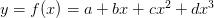
What we need to remember is that we can’t simply have a single third-order polynomial equation that fits ALL of the data points in our original data set, it’s just not possible. What we can do, however, is to create a set of these equations for each “piece” of our interpolated data set so that they all connect together smoothly. We can define a cubic spline, according to [1], as follows:
For a set of 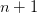 data points on 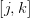, with a set of data points defined by 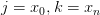 and 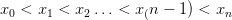, with y-values defined as 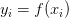, we can define a cubic spline interpolant 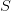 for the function 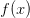 such that:
- 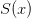 is a cubic (third order) polynomial, denoted 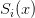, on the subinterval 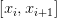 for each 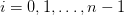 (This is a function that provides a value for any point between the extreme data points and 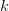.)
- 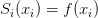 and 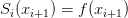 for each (The spline MUST pass through each of the original data points, 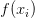.)
- 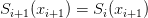 for each 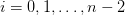 (We are creating a piecewise-continuous function over several sub-intervals of . This means that each “piece” of our interpolated data set must connect to its neighbouring “pieces”.)
- 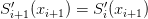 for each (At each data point, the first derivative (ie: the slope) must be the same on both sides, even if only on an infinitesimally small range. This makes sure that in addition to the function being continuous (from rules 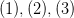 above), that the spline is differentiable over the entire interval as well. Without this contraint, we would still have the sharp discontinuities present in the previous interpolation methods.)
- 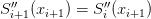 for each (Similar to rule 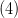 above, this makes sure that the curvature (second derivative) is continuous as well.)
- One of the two following sets of boundary conditions is satisfied:
- 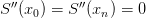 (This is referred to as a “free/natural” boundary. Imagine a flexible, straight piece of string being pulled to pass through each and every data point.)
- 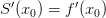 and 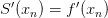 (This is referred to as a “clamped” boundary. It typically produces a spline that is more accurate than one generated using a “natural” boundary, but requires that we know the value of the derivatives at the end points. Since cubic spline interpolation does not yield the best results if we attempt to extrapolate data for the end points, and since we do not have this information on-hand, we will use “natural” boundaries in the rest of this tutorial.)
So, we now have a concrete definition of a spline. Now, how do we calculate one that fits our data points according to the criteria above? Without going into too much detail on the mathematics involved (a complete proof is available in [1]), for a natural cubic spline, we want, for each subinterval, 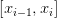, the coefficients for the following equation:
- 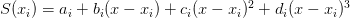
Applying the constraints previously listed to the above equation, we have the following set of equations:
- 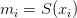
- 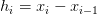
- 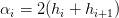 (note that this is the symbol for “alpha”, not a lowercase ‘a’; this criteria only applies to natural splines)
- 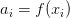
- 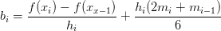
- 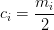
- 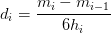
Now, applying the criteria from rule (6.1), we get the following equation:
- 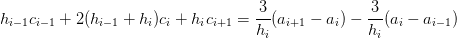
This equation provides with a set of equations we must now solve in the form of Ax=b, with the vectors/matrices defined as:
")
-f(x_1)}{h_2}-\dfrac{f(x_1)-f(x_0)}{h_1}\\\dfrac{f(x_3)-f(x_2)}{h_3}-\dfrac{f(x_2)-f(x_1)}{h_2}\\\vdots\\\dfrac{f(x_{n-1})-f(x_{n-2})}{h_{n-1}}-\dfrac{f(x_{n-2})-f(x_{n-3})}{h_{n-2}}\\\dfrac{f(x_{n})-f(x_{n-1})}{h_{n}}-\dfrac{f(x_{n-1})-f(x_{n-2})}{h_{n-1}}\end{array}\right)")
We already know the values for all 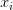 and , and from these, we can calculate the values for 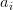,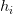, and . Once we’ve done this, we solve the matrix equation Ax=b for the x-vector containing the values 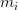. Once this is done, we can calculate the values 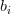,, and  .
Once all these values are calculated, we now have the coefficients for
each “piece” of the entire cubic spline interpolating polynomial over .
The sample MATLAB code below calculates a 1D cublic spline interpolant
for an arbitrary 1D data set. As with all of my code, I will attempt to
cover all the low-level details. This algorithm is based directly on the
one provided in [1]. For a complete version of this algorithm written
entirely in C, including code to solve a tridiagonal matrix, please
refer to “ALGO34.C” at the web page for Burden and Faires (8th).
.
Once all these values are calculated, we now have the coefficients for
each “piece” of the entire cubic spline interpolating polynomial over .
The sample MATLAB code below calculates a 1D cublic spline interpolant
for an arbitrary 1D data set. As with all of my code, I will attempt to
cover all the low-level details. This algorithm is based directly on the
one provided in [1]. For a complete version of this algorithm written
entirely in C, including code to solve a tridiagonal matrix, please
refer to “ALGO34.C” at the web page for Burden and Faires (8th).
The following MATLAB M-functions, csi.M, and csiplot.M below, can be tested by declaring a line space, x, and a function of x, y, and then running the csi and csiplot routines.
Cubic Spline Interpolation Function:
Plot(able) Vector Generation Code:
Code for a Sample Run:
So, we now have a means to generate accurate interpolations for any arbitray data set which will allow for reasonably sharp edges while still maintaining a smooth and continuous transition between data points. This comes at the expense of a much more complicated algorithm. Hopefully, at the least you have learned the constraints required to understand how a cubic spline is continuous and smooth on the entire interval [j,k]. If you want to really understand the entire concept down to the finest detail, I highly recommend reading [1], section 3.4. Now, let’s extend this concept to image processing!
In order to carry out bicubic spline interpolation, we first need to define our coordinate systems as we did in the previous subsections, as shown below:
Coordinate System
Here we calculate an interpolated data point based on a function of the nearest 4 neighbouring pixels from the source data. The twist here is that we need to generate a continuous, curved region from this data, rather than a linear one. To understand this better, consider a grayscale image: every point has an x-coordinate, y-coordinate, and an intensity value. The intensity value can be represented by a color, such as a grayscale value, which is proportional to the intensity value. Shown below is a 2D grayscale representation of a simple checkerboard (4×4 pixel) image upsampled using bicubic spline interpolation (we need at least a 3×3 pixel image to use bicubic spline interpolation).
2D Bicubic Resampling
This still doesn’t provide much insight into how bicubic interpolation generates a curved, interpolated surface. So, we’ll display these two images again, but instead of the intensity value representing a shade of gray, it will represent a height in 3D space, similar to a 3D elevation map.
3D Representation of Bicubic Resampling
So, we can see that we have taken the original data set, and
interpolated values in both the x and y dimensions to create a smooth
surface. An important note: Notice how the interpolated
dataset is smooth in the x-direction, y-direction, and the xy-direction
(ie: along the diagonals). This means that for any point in our
interpolated data set, we should be able to compute not only the
intensity (ie: height/grayscale) value, but also it’s derivative in ANY
direction along x, y, or xy. This is equivalent to us having the
following data available to us (assume =") the grayscale intensity value from the source image,
the grayscale intensity value from the source image,  , at 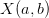, and that we are trying to calculate the interpolated grayscale value in the target/output image,
, at 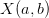, and that we are trying to calculate the interpolated grayscale value in the target/output image,  , at
, at ") ):
):
- The original intensity values of the surrounding pixels (4 values)
- The partial derivatives along the x-axis for each of these points (4 values)
- The partial derivatives along the y-axis for each of these points (4 values)
- The cross-derivatives at each of these points (4 values)
")


{kind=link}
{kind=link}
{kind=link}
{kind=link}
{kind=link}
{kind=link}
{kind=link}
{kind=link}
This leaves us with a total of 16 values to solve for in the case of
generalized bicubic interpolation, as opposed to the 4 needed with 1D
cubic spline interpolation ( and ).
and ).
In image processing, we usually do not have most of these values readily available, and must frequently approximate them though numerical methods. Fortunately, in the case of bicubic spline interpolation, there is a very easy way to approximate the solution to this problem using what we’ve already learned from the 1D case of cubic spline interpolation! (Note that “bicubic spline interpolation” is basically a special case of a more general technique referred to as “bicubic interpolation” Don’t confuse the two! Bicubic spline interpolation does not make use of the cross-derivative values, and therefore is not as accurate as generalized cubic interpolation, which will be covered in the next subsection.)
To generate our approximate solution, we simply do the following:
- Take our input (source) image, and caclulate the number of columns and rows
- For each column (from top to bottom), calculate a linear 1D spline using the rows indexes as x-values and the intensity (grayscale) values as the y-values. Save these results to an ouput table.
- Now, perform the same operation on all the rows (from left to right) of the previously generated output table.
- Done!
The following code uses the 1D cubic spline interpolation function to create the following upsampled images:
{kind=link}
{kind=link}
{kind=link}
See how this interpolation method has resampled my “trees” picture from this:
{kind=link}
To this:
{kind=link}
The image above looks better than when we used the two previous interpolation methods. Before we conclude this subsection, we should note a potential artifact that this interpolation method can introduce – halation. Just like how nearest neighbour interpolation introduces aliasing, or bilinear interpolation introduces blurring, this method introduces artifacts too. This essentially causes “halos” around parts of an image, or an overbrightening of select pixels near the borders of shapes. It can also cause values in the output image to be less than zero due to overshoot, so make sure to either normalize the final output image or adjust your code to check for this. More on this will be covered in the next section on histograms and statistics.
{kind=link}
As shown above, notice how the image on the right has a bright “halo” around the outer edges of the smiley face.
Please note: in the code I used to generate 1D cubic splines, you may notice that I designed the function to allow a user-selectable number of data points to be inserted between existing data points rather than to allow the user to specify the final number of data points in the result. With a little work, this should be easy to change. No point in making this too easy. Now, with bicubic spline interpolation covered, we will move on to the final subsection for resampling and interpolation: generalized bicubic interpolation.
References
[1] Burden, Richard L., and J. Douglas Faires. Numerical Analysis. Belmont: Brooks Cole, 2004. Print.
[2] Numerical recipes in C the art of scientific computing. Cambridge: Cambridge UP, 1992. Print.
I am grateful for your help!